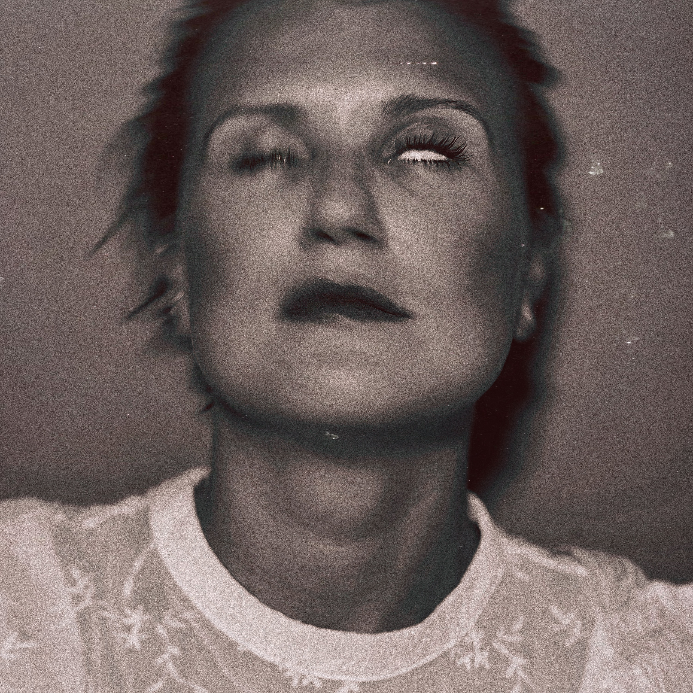

There are titles that try to explain the music, and there are those that warn you straight away: perhaps there is no point in explaining anything here at all. Stolicabolgarii’s Дорогобужский грайм is exactly the second kind. Dorogobuzh is a small town in the Smolensk region; grime is a genre of British urban music that emerged in London in the early 2000s. At first glance, they have nothing in common (and not at second glance, or third, either). And that is precisely why the title works. At least for me. What is special about it is that there is no grime on the record at all. There is no genre discipline, no expected rhythmic architecture, and no attempt to reproduce a recognisable aesthetic. The artist instead uses the word “grime” as an artistic gesture — a deliberately misplaced label meant to raise a question before the music even begins. Write “cucumber” on a chocolate bar.

Behind the name stolicabolgarii is Sofia — a woman from Dorogobuzh, a professional theatre director and arts practitioner who came to music relatively late, beginning her musical career at the age of 34. Today she lives in the Middle East, where she has equipped a studio at home and recorded her first six-track EP. On paper, it is a simple story. How many such stories have we seen? But the record itself is more complicated. It bears absolutely no resemblance to an attempt by a beginner musician to learn the rules of the game. Rather, it feels as though the artist came to music only after she had already grown tired of it — and therefore is not particularly interested in following its rules.
Дорогобужский грайм does not sound like a debut in the usual sense of the word. There is almost none of the feeling of a “first attempt”. It is more like the music of someone who seems to be leaving something behind. Perhaps that is why the record makes such a strange impression: technically, it has enough imperfections, but artistically it behaves too confidently to be called apprentice work.
Music After the Rules
Sofia plays keyboards and openly gravitates towards academic music. You can hear this not in direct quotations or imitations of the academic tradition, but rather in the very way she thinks aesthetically and about her subject matter. The melody does not always serve the song, harmony does not have to be comfortable, and the vocals can suddenly step outside the bounds of a familiar pop manner. Do not take this conclusion as yet another unfocused take. (I can already imagine how this is going to sound in English.)
The musical coordinates here are entirely different — trip-hop, breakbeat, alternative pop, contemporary vocal music. All of it collides without much desire to reach a compromise.
And this, perhaps, is the album’s main characteristic: it does not so much mix genres as set different musical ideas of how a song should be constructed against one another. Is it a song, a note in a notebook, or a shout from an anonymous crowd? (I may be overdoing it here.)
You can hear echoes of a great compositional tradition, but they are placed in an environment where familiar dramaturgy is constantly breaking down. Instead of careful development, there is a jump; instead of the expected resolution, a new intonation. Instead of smooth pop production, there is a feeling that some elements have deliberately been left slightly out of place. This is music that does not know very well — or does not particularly want — how to be restrained and static. And that is both its problem and its virtue.
At a private listening session, the record had already been described as lacking balance and averaging-out, with elements of naïve grotesque. In another context, such a description might sound like a sentence. Here, unexpectedly, it turns out to be a fairly precise definition of the method.
Contemporary art, in general, is rarely about neatness. Its nature lies in the collision of forms, the deliberate breaking of proportions, the attempt to make visible or audible what does not fit into a familiar composition. In that case, the grotesque becomes not a flaw but an outward form (and usually a functional one). In stolicabolgarii’s work, it is clearly not always under control yet. But from the first composition to the last, it feels alive and non-pragmatic.
A Simple Form, a Complex Thought
Despite its outward experimentalism, the release does not try to be an intellectual puzzle. There is another interesting contradiction here. The EP is built on a fairly simple idea: to speak about love, attempts to understand oneself and others, events one has lived through, places, and a possible future. There is no obligatory conceptual structure here. These are personal stories and reflections shaped through a rather complex musical environment (keep in mind — ordinary things happen differently). That is why the record does not completely fall apart into experimentation for experimentation’s sake. The complexity lies more in the form than in the statement. This is an important point for contemporary alternative music. Today, an experimental record can quite easily turn out to be a work that is much more interesting to discuss than to listen to (the masters of the past have said this before me). Дорогобужский грайм periodically approaches that boundary, but ultimately preserves its human core. Behind the broken rhythms, academic intonations and deliberately strange arrangement choices, there remains a person trying to sort out her own thoughts (I am borrowing this phrase from a youth community about love). The result is a kind of inversion: the music seems more complicated than its content. But there is a feeling that this is exactly how it is supposed to work. The music was written with the heart, sung with the mouth, and mixed into a master track by engineers and producers using their hands. No cheat codes (if you understand what I mean) were used. What a pity that we live in a time when this has to be pointed out.
From Dorogobuzh to the Middle East
There is another interesting layer to the story. Stolicabolgarii lives in the Middle East, but her music hardly tries to depict the region or turn the emigrant experience into exotic material. This is not music about a new place. Rather, it is the music of someone who found herself in a new place and continued working through old questions. In this sense, the record turns out to be much more about emigration than it would be if it contained direct stories about a foreign culture or everyday observations. Dorogobuzh here is a point in the past, but not one that has disappeared (not an uncommon device of national suffering). There is a distance between the two, and the music tries to fill it. The title begins to work in an even stranger way. It is a little funny, a little pretentious, and at the same time describes the nature of the project quite accurately. There is locality without folklore (there is nowhere for it to come from). There is emigration without the obligatory emigrant aesthetic. There is an academic tradition without academic conservatism. And there is pop music that, for some reason, constantly wants to step outside the boundaries of pop music (often by quite a long way).
Music Drawn in an Old Magazine
One of the strangest impressions left by the release has less to do with its sound than with its visual imagination. It is easy to picture the album not on a modern streaming platform, but somewhere inside an old book, a theatre programme or a teenage magazine. Not “the past” in the literal sense, but rather a work that exists somewhere between an illustration, a play and a musical fantasy. There is a certain adolescent directness to it — not childishness, but an absence of fear of seeming too serious, too strange or too emotional. For a debut project, that is bold. Most musicians try to prove they are already professionals on their first release. They clean up the sound, carefully choose genre reference points, and tone down anything that might seem excessive. Stolicabolgarii does almost the opposite: she keeps the excess close to the listener. You could even say that the album sometimes sounds as if Erykah Badu’s imagination had accidentally wandered into a theatre workshop where, instead of familiar drums, there were metal buckets, and instead of guitars, hunting horns. I am trying to describe the principle of collision: soul or alternative-pop sensibility meets theatricality, academic music and a deliberately broken rhythmic environment. It feels as though everything here rests on these collisions.
The Dominance of Imperfection (A Focus on Weakness)
There is none of the studio polish on Дорогобужский грайм that has today become almost a mandatory condition for a professional release. This does not mean an absence of engineering thought; rather, it suggests an excessive presence of it. Some decisions can be called questionable, some arrangements unbalanced, and some vocal moments excessive and dark. There is no need to fix this kind of thing; we like it this way. If all that extra weight were removed, the dynamics evened out, the vocals made more predictable and the arrangements more rational, there would be a risk of losing the very reason anyone would want to discuss this record at all (especially the tracks “Chudishche” and “Shanghai”). Not everything here conforms to artistic logic. And for critical analysis, that is dangerous territory. The line between intentional imperfection and simply weak production is very thin. This artist poured everything onto the canvas without restraint and without assigning it some archaic meaning. And this is precisely where Sofia’s future work has its most interesting path ahead: learning to control her own chaos without destroying it. There is Dolphin (Russia), Aigel (Russia, Tatarstan), Die Antwoord (South Africa) — it is all here. For now, she has brought the chaos of her thoughts under control and gathered it into a system rather than created a flawlessly constructed musical paradigm.
Not a New Genre, but a New Context
It would be premature to call stolicabolgarii the inventor of a new genre.
The term contemporary has long existed in art and music. Alternative pop, trip-hop, breakbeat, experimental vocal music, and the joining of academic tradition with electronic aesthetics are not new either. But novelty does not always come from inventing new material. Sometimes it appears through a new context. And this is where Дорогобужский грайм has grounds for serious attention. In Russian, this kind of mixture really does sound unfamiliar, or demonstratively pretentious. But pretentiousness in this case is not necessarily an inner weakness or helplessness. An artistic gesture, grace, complexity. Sofia does not try to reduce the scale of her own ambitions to make the music more convenient or to stay within the field of attention. And that is one of the rarest things in independent music today. You can argue with individual decisions. You can consider some tracks too theatrical, some vocal parts excessive, and the rhythmic structures insufficiently assembled. But it is difficult to say that there is nothing behind them. There is an author here — strange, awkward, hurried, windy, but an author nonetheless. An authorial signature usually appears before flawless mastery. Success exists in the very act of appearing, not in the number of people being indulged.
A Debut That Feels More Like a Farewell
In art, farewells are customarily made with style and without veils. The album’s six tracks are united by themes of love, self-definition, memory and the future. But overall, the release leaves an impression not of a beginning, but of a transition. As if the person were not opening a new page, but closing the previous one. This is interesting in light of Sofia’s biography. To begin a musical career at 34 is to come to music with a certain baggage that cannot be erased. That is why Дорогобужский грайм does not feel like the work of someone who has only just discovered music in the backpack of her strengths (ah, how artistic). Rather, it is the work of someone who has finally decided to use music for what she previously expressed through other means. And that is why the debut turned out so large in scale. It can be uneven, at times too loud in its declarations (not sensitive enough). It can irritate with its deliberate lack of restraint. But it bears absolutely no resemblance to trial material. This is already a voice — perhaps quiet, but confident.
What Comes Next
The project has a Franco-Canadian label, a producer, plans for the next album in 2027, and notable concert ambitions in Asia and Europe. The future work will show whether the first release was a successful experiment or the beginning of a truly independent artistic language. A first release has the right to be imperfect, while still being historically interesting to its author. It is a moment when a system of restrictions has not yet formed, when a musical language is only beginning to understand its own boundaries and barriers. This is not Bowie, but her music is likewise not always comfortable, not always rational, not always balanced. Sometimes it is too theatrical, sometimes too naïve, sometimes too confidently claiming novelty. But in a world where independent music increasingly learns to look professional before it has had time to become personal, this excess reasonably becomes a value. Дорогобужский грайм does not offer the listener a new genre. It offers a new door into someone else’s inner space. And behind that door there are still quite a lot of inaccuracies and openly childish antics. But apparently, it is precisely out of this chaos that stolicabolgarii intends to build her own platform for expression.